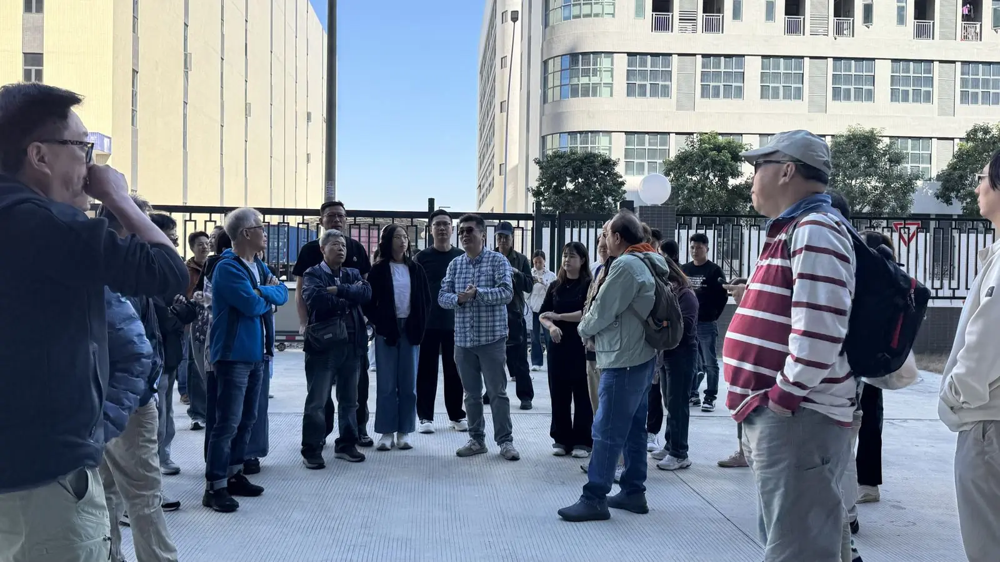
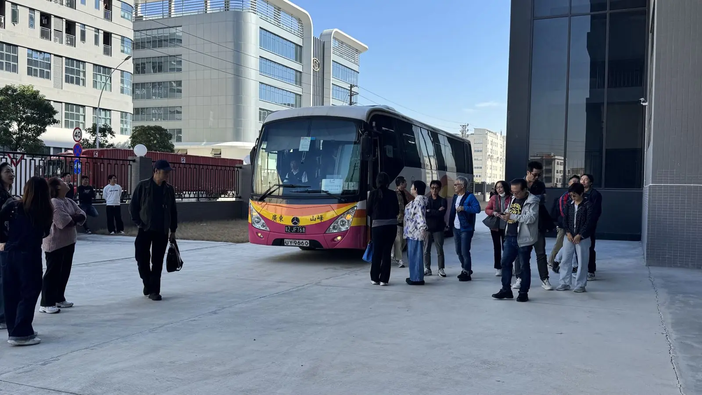
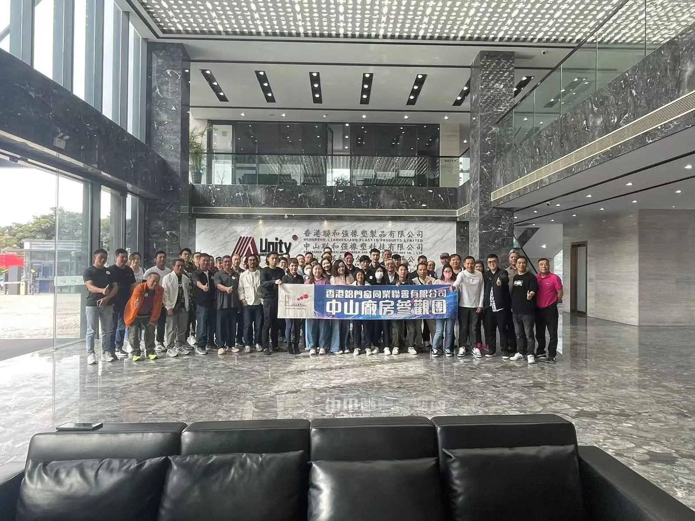
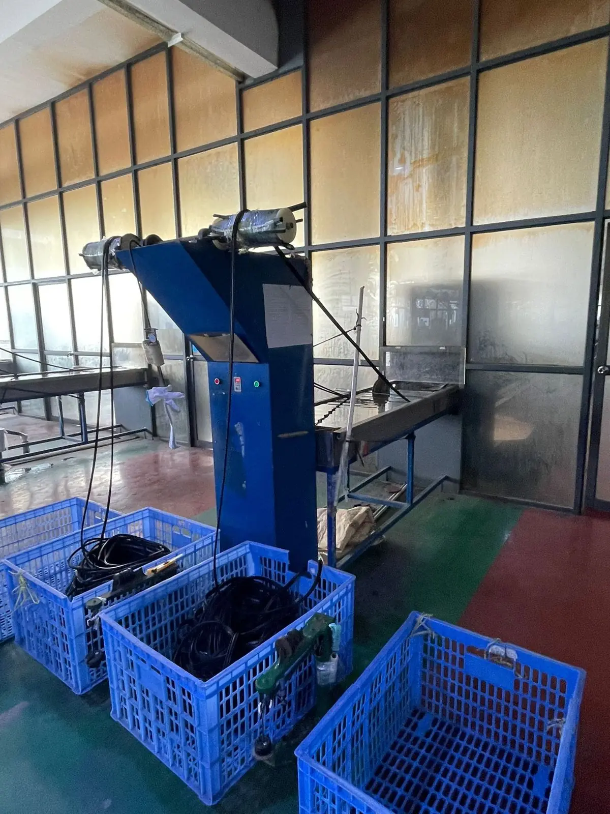
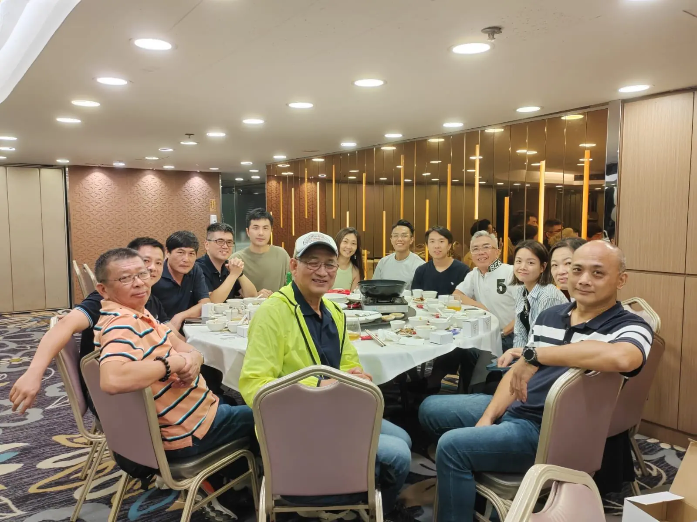
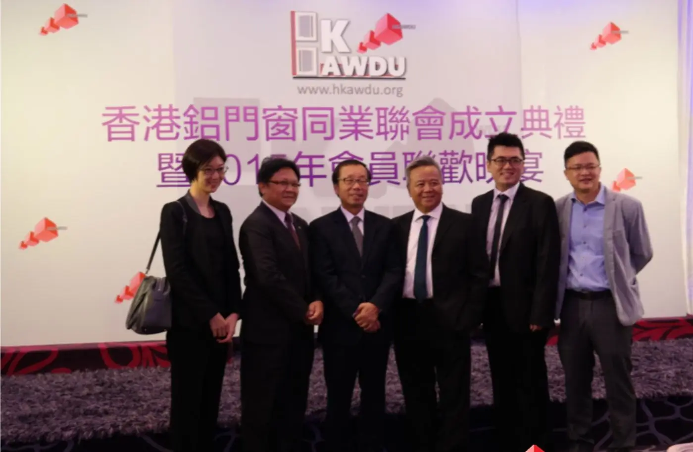
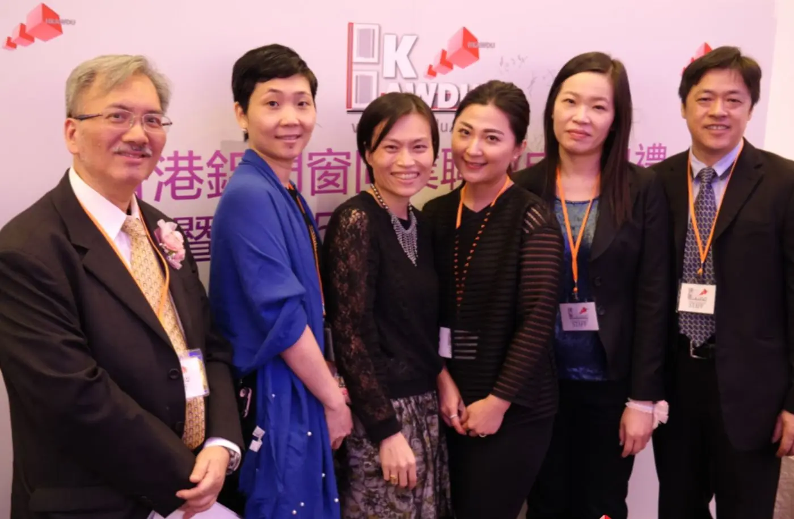

- 2025-11-29 · 星期六
鋁門窗及玻璃廠中山考察團



聯會安排跨境旅遊巴，由旺角及屯門出發前往中山，參觀創會成員升威 LE-RELAX 的中山生產基地（鎮威鋁門窗廠）、鎮升玻璃廠及信義玻璃廠，並設午宴交流。活動旨在讓會員深入了解行業最新趨勢及生產加工技術，並與業內專業人士分享經驗。
- 2023-12-09
中山廠房參觀團
近五十位會長及會員參加，參觀創會成員升威 LE-RELAX 的中山廠房，包括鋁窗生產車間及玻璃加工部，並與供應商共晉午宴。



- 2023-10-16
2023 年第一次會長會議
疫情後首次會長聚會。會上討論舉辦內地廠房考察、與 IVE 合辦三級小型工程課程，以及以聯會名義向政府爭取復辦二級小型工程短期課程。

會長會議合照 - 2015-11-30
聯會成立典禮暨 2015 年會員聯歡晚宴
近百位嘉賓及同業到賀。創會會長李少波表示，聯會成立目的是團結鋁門窗同業力量，一齊為業界發聲，並更好地為市民大眾提供優質服務。理事會長陳雨冰指出，聯會首要工作是編製會員名冊，方便市民找到專業師傅。



想收到最新活動通知？請以 WhatsApp 6915 6828 或電郵 info@hkawda.org 登記。